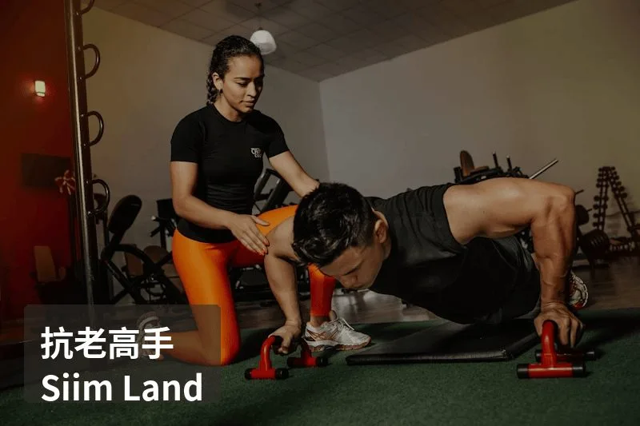
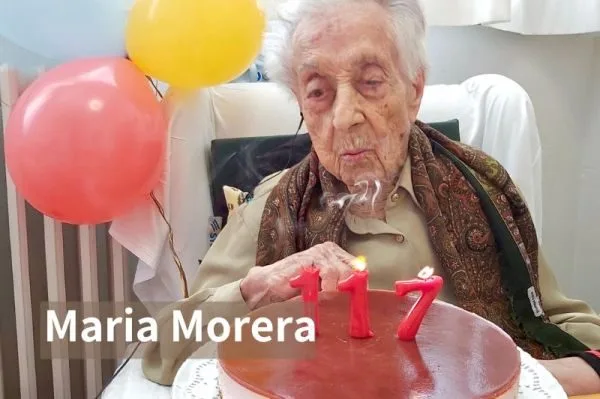

抗老高手 Siim Land

（由於肖像權使用規範，以上圖片並非 Siim Land 本人，而是選取自無版權限制的圖片網站，僅作為示意圖）
又到了介紹抗老達人的時間。今天這位主角的背景非常特別：他出生在波羅的海上一個叫做 Saaremaa 的愛沙尼亞小島，高中畢業後進入軍隊服役 8 個月，接受過專業狙擊手訓練。退伍後進入塔林大學攻讀人類學，從此踏上了研究「人類如何活得更久」的道路。他叫 Siim Land，今年 30 歲，但他的 SYMPHONY 器官年齡測試結果只有 17 歲。在全球逆齡排行榜 Rejuvenation Olympics 上，他的 DunedinPACE 分數曾達到 0.62，一度排名全球第一。這意味著他每過一年，身體只老化了大約 0.62 年。
Siim Land 是 8 本暢銷書的作者，擁有超過 50 萬名線上追蹤者，同時也是全球各大生物駭客大會的常客講者。但跟很多高調的生物駭客不同，他的方法論並不燒錢，也不極端。他沒有像 Bryan Johnson 那樣每年花 200 萬美金，也沒有吃 120 種補充品。他的核心理念可以用一個詞來概括：代謝自噬（Metabolic Autophagy）。這也是他最知名的著作的書名。
「代謝自噬」的概念其實不難理解。我們的身體有兩個主要的代謝模式：一個是 mTOR（生長模式），負責肌肉合成、細胞增殖；另一個是自噬（Autophagy，修復模式），負責清除受損的蛋白質、回收老化的胞器。大多數人的問題在於，因為一整天都在吃東西，mTOR 永遠處於開啟狀態，自噬幾乎沒有機會啟動。Siim Land 的策略不是永遠斷食，也不是永遠進食，而是在這兩個模式之間有節奏地切換。重訓日開啟 mTOR 促進肌肉生長，斷食期間啟動自噬進行細胞清潔。他認為這種「脈衝式」的切換，才是同時維持肌肉量又延緩老化的最佳策略。
飲食方面，Siim 每天只吃兩餐。第一餐在早上 10 點左右，是一杯蛋白質奶昔，內含 30 克乳清蛋白、膠原蛋白和冷凍莓果。第二餐在下午 4 到 5 點，是一頓豐盛的地中海式正餐：十字花科蔬菜、番茄、豆類、鮭魚或鯡魚、雞蛋，搭配馬鈴薯和橄欖油。他的巨量營養素比例大約是蛋白質 25%、脂肪 25%、碳水化合物 50%。沒錯，他吃碳水，而且比例不低。他認為適量的碳水化合物對甲狀腺功能和睡眠品質是必要的，不需要為了長壽而走極端低碳。
運動方面，他的課表非常全面：每週 3 次阻力訓練（推、拉、腿分開練，每次約 45 分鐘）、每週 1 次高強度間歇訓練（採用挪威 4×4 協議）、每週 2 次 Zone 2 有氧（每次 60 分鐘），加上每天步行 10,000 到 12,000 步。這個配置涵蓋了肌力、心肺耐力、最大攝氧量和日常活動量，幾乎是教科書等級的運動處方。
補充品方面，他的清單簡潔但每一項都有明確的目的：膠原蛋白 10g（皮膚健康）、甘胺酸 10-15g（穀胱甘肽合成）、TMG 2g（同半胱胺酸代謝）、肌酸 3g（肌肉和認知功能）、鎂 400mg（心血管健康）、牛磺酸 6g（抗氧化和心臟保護）、Omega-3 2g（抗發炎）、玻尿酸 200mg（關節和皮膚）、蝦紅素 12mg（紫外線防護）。總共不到 10 種，每月花費也遠低於那些動輒上百種補充品的生物駭客。
其他生活習慣也值得一提。他每天早上洗冷水澡，每週做 4 次桑拿，每次 20 分鐘。他重視睡眠週期的管理，以 90 分鐘為一個循環來規劃睡眠時間，確保能完整經歷深層睡眠和 REM 睡眠。他每年做 2 次完整的血液檢查和 1 次 DEXA 掃描來追蹤身體組成的變化。
從我的角度來看，Siim Land 最讓我欣賞的地方在於他的平衡感。很多生物駭客走向了兩個極端：要嘛花大錢追求最新的科技和藥物，要嘛用極端的飲食限制來壓低老化速度。但 Siim 用相對簡單、可持續的方法，就達到了全球頂尖的逆齡成績。他吃碳水、他吃豆類、他不排斥任何一大類食物，他的補充品清單你在一般的保健品店就能買齊。這證明了一件事：逆齡不需要極端，需要的是一致性和對基本原則的長期執行。
如果要從 Siim Land 的策略中提煉出最值得一般人參考的三件事，我會說：第一，學會讓身體在生長和修復之間切換，不要 24 小時都在進食狀態。第二，運動要兼顧肌力和心肺，不是只做有氧或只做重訓。第三，補充品不需要多，但要補對。甘胺酸、鎂、Omega-3、肌酸，這幾樣的投資報酬率可能比你吃的任何昂貴保健品都高。
30 歲，器官年齡 17 歲，全球逆齡排名曾居第一。Siim Land 的故事告訴我們，長壽從來不是有錢人的專利，它是每一天生活選擇的累積。
 空腹小雞跟思思醫師一起斷食，順便養一隻小雞來養小雞 →
空腹小雞跟思思醫師一起斷食，順便養一隻小雞來養小雞 →
好朋友週信
每週五一封：《健康駭客週報》這集的研究重點，加上家醫專欄這週的新文章。免費，隨時可以退訂。
延伸閱讀

抗老高手 Ethel Caterham
116歲全球最長壽者Ethel不和人爭論而按自己意思生活，慢性心理壓力加速皮質醇升高造成胰島素阻抗，自主感和複雜認知活動如橋牌降低壓力激活副交感神經。
抗老高手Carmen Dell’Orefice
九十三歲超級模特Carmen透過正向心態、順應身體飲食習慣、充足補水、規律運動及睡眠維持優雅抗老，展現美與年齡無衝突。

117歲的女性，Maria Morera
117歲瑪麗亞案例顯示端粒長短非壽命決定因素，而是粒線體功能、代謝健康指標和規律食用優格、橄欖油才是長壽關鍵。